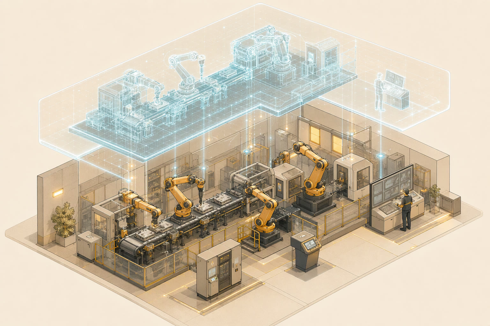
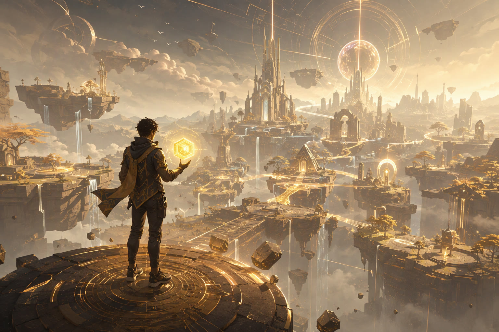

Интернет перестал быть «сетью сетей»
Ещё двадцать лет назад Интернет был способом передать файл и найти страницу. Сегодня это среда обитания экономики, государства, культуры и — всё чаще — самого человека. Но у этой среды есть странность: она перегружена данными и при этом бедна смыслом. Поисковая система видит слово «ягуар» и не понимает, зверь это, автомобиль или футбольная команда. Человек различает мгновенно. Машина — нет.
Этот лонгрид построен на материалах реферата первой лабораторной работы и развивает его в мультимедийном формате. Мы пройдём четыре витка темы. Сначала — посмотрим на цифровую экономику и «Индустрию 4.0» как на почву, на которой выросли современные интернет-технологии. Затем разберёмся, что скрывается за модным ярлыком «Web 3.0», и почему его подлинный фундамент — не криптовалюты, а Семантическая паутина. После этого спустимся на уровень кода: RDF, OWL, SPARQL, JSON-LD, Schema.org — технологии, которые уже сегодня работают на каждой второй странице в выдаче Google. Наконец, покажем, как всё это применяется в одной из самых технологичных отраслей мира — гейм-индустрии, где семантика управляет поведением персонажей, а блокчейн определяет, кому принадлежит цифровой меч.
В тексте — цифры исследований Gartner, Newzoo и Grand View Research, ссылки на первоисточники, экспертные статьи и практические кейсы, видеовыступление создателя Всемирной паутины, интерактивные инфографики и аудиосводка. Каждый элемент несёт часть смысла: графики доказывают масштаб, схемы объясняют устройство, видео даёт голос первоисточнику, аудио освобождает глаза, а интерактивные лаборатории позволяют собрать семантический триплет своими руками.
Цифровая экономика и «Индустрия 4.0»
Современный этап развития инфокоммуникационных технологий характеризуется беспрецедентной скоростью проникновения цифровых решений во все сферы жизни. По прогнозу Gartner, мировые расходы на ИТ в 2026 году достигнут 6,37 триллиона долларов — рост на 14,2% за год. При этом аналитики называют строительство вычислительной инфраструктуры для искусственного интеллекта «крупнейшей инфраструктурной задачей в истории человечества».
Эти цифры — не абстракция. Они означают, что данные окончательно стали ключевым фактором производства, как в своё время стали нефть, электричество и вычислительная мощность. Цифровая экономика — это система экономических, социальных и культурных отношений, построенная на цифровом представлении информации. Интернет-технологии выступают её катализатором, трансформируя критически важные процессы:
- государственное управление — электронное правительство сокращает путь услуги до гражданина с недель до минут;
- промышленность и логистика — непрерывный мониторинг оборудования и автоматизация цепей поставок;
- финансовый сектор — распределённые реестры, мгновенные безналичные платежи, алгоритмическая оценка рисков.
Обратите внимание на структуру роста: самый стремительно растущий сегмент — дата-центры (+62,5% за год). Это признак того, что экономика перестала потреблять интернет как канал связи и начала потреблять его как вычислительную среду. Облако перестало быть «чужим диском» и стало фабрикой интеллекта.
В социальном контексте Интернет за те же годы прошёл ещё более глубокую метаморфозу. Он превратился из средства передачи сообщений и поиска информации в ключевое пространство социализации, экономической активности и государственного управления. Формируется «цифровое общество», в котором доступ к качественным интернет-сервисам определяет образовательные и профессиональные возможности человека не меньше, чем доступ к транспорту или электричеству. Пандемийные годы ускорили этот сдвиг: дистанционная работа, онлайн-образование, телемедицина — всё это осталось с нами навсегда.
Три инфраструктурных фактора сделали такой сдвиг возможным. 5G и оптоволокно подняли пропускную способность сетей на порядок. Удешевление вычислений — от микроконтроллеров за доллар до облачных GPU — перенесло обработку туда, где она дешевле всего. И главное — Big Data: мир генерирует сотни зеттабайт информации в год, и ценность создаётся уже не самими данными, а способностью их связывать и понимать.
«Индустрия 4.0»: когда завод обрёл цифрового двойника
Концепция «Индустрия 4.0», или Четвёртой промышленной революции, описывает сквозную автоматизацию производства. Её ключевая идея — объединение физических активов и цифровых систем в киберфизические комплексы (CPS): завод больше не просто механизм, а организм, у которого есть сенсоры (нервы), сеть (кровеносная система) и модель (мозг).
Стоит отдельно сказать о термине «революция». Промышленная революция меняла не инструмент, а саму организацию труда: паровая машина породила фабрику, конвейер — массовое производство. Киберфизические системы меняют организацию таким же образом: решение принимается моделью, а не начальником смены; качество контролирует датчик, а не инспектор; планирование ведётся в симуляции, а не по прошлогодним отчётам. Это не модернизация — это смена ролей человека и машины в производственном процессе.
Четыре технологии образуют хребет этой концепции. Промышленный интернет вещей (IIoT) — рой датчиков и контроллеров, снимающих телеметрию с оборудования. Цифровые двойники (Digital Twins) — виртуальные копии физических объектов, на которых можно «проиграть» завтрашний день без остановки производства. Облачные и граничные вычисления разделяют роли: критичные по времени решения принимаются на месте (edge), глубокий анализ — в облаке. Наконец, искусственный интеллект и предиктивная аналитика предотвращают аварии до того, как они случатся.

Зачем промышленный раздел — в лонгриде об интернет-технологиях? Потому что именно здесь рождается главный запрос эпохи: данных стало так много, что человек уже не способен их интерпретировать без машины, а машина — не способна интерпретировать их без смысла. Цифровой двойник должен «знать», что такое «подшипник», «перегрев» и «норма износа». ИИ-модель должна опираться на факты, а не на догадки. Этот запрос — мост к Семантической паутине. Но сначала разберёмся, как вообще эволюционировал сам веб.
От Web 1.0 к Web 3.0
Парадигма веб-технологий прошла путь от эпохи статического контента до эпохи интеллектуальной, машинно-читаемой среды. Условно этот путь делят на три поколения — и полезно увидеть их не как маркетинговые ярлыки, а как ответы на последовательные технологические тупики.
Web 1.0 («Read-Only», 1990–2004) — интернет брошюр. Страницы писали веб-мастеры, пользователи только читали. Гиперссылка соединяла документы, но не данные: у машины не было никакого способа понять, что на странице написано. Поиск сводился к индексированию слов.
Web 2.0 («Read-Write», 2004–2020) — интернет платформ. Пользователи стали производителями контента: блоги, соцсети, видеохостинги, wiki. Но у этого бумеранга была оборотная сторона: контент пользователей оказался заперт в силосах корпораций. Данные лежат на серверах платформ, алгоритмы платформ решают, что вы увидите, а перенести свою аудиторию из одной сети в другую невозможно.
Само выражение «Web 3.0» появилось ещё до блокчейна: в середине 2000-х им называли именно семантическое видение Бернерсом-Ли — веб, понятный машинам. Лишь около 2020 года ярлык перехватили криптопроекты, и сегодня одно и то же слово в разных текстах означает разное. Поэтому в академическом контексте важно различать: Semantic Web / Web 3.0 — инженерную программу связанных данных, и web3 — экосистему децентрализованных приложений на блокчейне. Они пересекаются (токены, децентрализованные идентификаторы), но не совпадают.
Web 3.0 («Read-Write-Own») — попытка ответить на вопрос: а можно ли сделать интернет, который принадлежит пользователям и понятен машинам? Сдвиг строится на четырёх трендах: семантической паутине, децентрализованных технологиях и блокчейне, искусственном интеллекте и метавселенных с иммерсивными интерфейсами.
Статические страницы, каталоги ссылок, первые поисковики по ключевым словам. Информация связана адресами, а не смыслом.
Платформы и соцсети. Пользователь — производитель контента, но данные заперты в корпоративных силосах.
Машиночитаемые данные, децентрализация, ИИ-агенты. Пользователь владеет данными и активами.
Четвёртый тренд: пространственные интерфейсы
Метавселенные, AR и VR заслуживают отдельного слова, потому что они меняют не «что» показывает интернет, а «где» он находится. Плоский экран предполагает страницу; шлем дополненной реальности предполагает сцену — с объектами, их положением и свойствами. А описание объектов сцены со свойствами — это буквально предметная область онтологий: у каждого виртуального стула есть геометрия, материал, владелец и поведение при взаимодействии. Индустрия стандартизует это через форматы вроде glTF и набирающего вес USD (Universal Scene Description) — фактически семантические словари для 3D. Чем больше виртуальных миров, тем острее потребность в общем языке их описания — и тем ближе метавселенная к Семантической паутине, чем это принято думать.
Семантическая паутина
В мае 2001 года создатель Всемирной паутины Тим Бернерс-Ли вместе с Джеймсом Хендлером и Орой Лассилой опубликовал в Scientific American статью «The Semantic Web». В ней была сформулирована концепция сети, в которой информация структурирована так, что её могут понимать и обрабатывать не только люди, но и вычислительные машины.
В традиционном вебе документы созданы для визуального восприятия: HTML задаёт отображение — заголовки, абзацы, таблицы. Поиск и агрегация смысла происходят по эвристикам и ключевым словам, то есть по косвенным признакам. Задача Semantic Web — добавить к данным метаданные, описывающие их смысл и связи, превратив веб из «кучи страниц» в распределённую базу данных, работающую по принципу связанных данных (Linked Data).
«Я мечтаю о паутине, в которой компьютеры способны анализировать все данные в сети — контент, ссылки, транзакции между людьми и компьютерами». — Тим Бернерс-Ли, «The Semantic Web», Scientific American, май 2001
Прогноз 2001 года оказался на удивление точным — просто с опозданием на двадцать лет и в другой одежде. Агенты, которые должны были сами записывать человека к врачу, сегодня существуют в виде ИИ-ассистентов. Но чтобы ассистент мог «понять» страницу, она должна быть размечена. Именно поэтому идея связанных данных пережила все хайповые волны и вошла в инфраструктуру поиска, рекомендаций и генеративного ИИ.
Важная веха этого пути — проект DBpedia (2007), извлекший структурированные данные из Википедии и превративший её в RDF-граф, доступный для SPARQL-запросов. За ним пришёл Linked Open Data — облако публичных связанных наборов данных, — а затем Wikidata: свободная база знаний, читаемая людьми и машинами одновременно. Каждая статья Википедии, каждый фильм, город и химический элемент имеют там идентификатор, тип и свойства — то есть онтологическое описание.
«Пирог» Семантической паутины: семь слоёв
Технологический стек Semantic Web обычно изображают в виде многослойного пирога — каждый слой опирается на предыдущий. Нажимайте на слои и пункты списка: каждый слой раскрывает своё назначение.
- 1 · Unicode и URIГлобальная система имён: у каждой вещи, класса и свойства в сети есть уникальный идентификатор — адрес, по которому её можно найти и на который можно сослаться.
- 2 · Синтаксис: XML, Turtle, N-TriplesСпособы записать данные «на бумагу»: сериализации, в которых утверждения можно пересылать между системами.
- 3 · RDF — модель данныхСердце Семантической паутины: любой факт записывается как триплет «субъект — предикат — объект». Набор триплетов образует граф знаний.
- 4 · RDFS — базовая схемаКлассы, подклассы, свойства, области определения — первый уровень словаря, которым описываются вещи.
- 5 · OWL — язык онтологийБогатая логика: эквивалентность классов, кардинальность, транзитивные свойства. Позволяет машинам делать логические выводы (Inference).
- 6 · SPARQL — язык запросовSQL для графов: выборки по связям между сущностями, а не по таблицам и строкам.
- 7 · Trust и ProofВерхний слой — доверие и доказательства: откуда факт взят и почему ему можно верить. Именно здесь семантика встречается с блокчейном и верифицируемыми данными.
Стандарты, которые держат всё здание
Resource Description Framework (RDF) — базовая модель данных: информация представляется утверждениями из трёх элементов. Пример: «Книга X — имеет автора — Иван Иванов». Простота обманчива: из миллиардов таких атомарных фактов складываются графы знаний Google, Wikidata и корпоративных баз знаний.
RDF Schema (RDFS) и Web Ontology Language (OWL) — языки описания онтологий: задают классы объектов, иерархии и логические ограничения. OWL позволяет агентам делать выводы: из «все сотрудники — люди» и «Иван — сотрудник» машина логически выводит «Иван — человек» — без единой строчки императивного кода.
SPARQL — язык запросов к семантическим данным. Если SQL спрашивает таблицу «где», SPARQL спрашивает граф «кто с кем связан и как». Запрос вида «найди все RPG, выпущенные после 2000 года, у которых оценка выше 85» записывается как описание образца графа, а не как перебор строк: вы описываете, как должен выглядеть ответ, и движок сам находит все вхождения этого образца во всём графе.
JSON-LD — формат сериализации, который встроил семантику в повседневную веб-разработку: семантические данные встраиваются в обычный JSON страницы, не ломая её структуру. Именно JSON-LD сегодня рекомендует Google для микроразметки.
# выберите субъект, предикат и объект —
# а Turtle-код сгенерируется автоматически
Заметьте: триплеты не знают границ баз данных. URI :ownsItem может определяться в одной онтологии, использоваться в чужом графе и запрашиваться третьим сервисом через SPARQL. Это и есть принцип связанных данных: публикация, связывание, переиспользование.
Надстройкой служат правила вывода. Если в онтологии записано, что «владелец меча — воин фракции» и «воин фракции имеет доступ к казармам», то система выводит: владелец меча имеет доступ к казармам — даже если этот факт никто не вводил явно. Такие цепочки inference работают за счёт логики OWL и превращают граф из хранилища фактов в машину рассуждений. Именно поэтому граф знаний ценнее суммы его записей.
Семантическая вёрстка
Семантика оказалась настолько нужна, что спустилась с уровня научных графов на уровень повседневной вёрстки. Сегодня она живёт в каждой приличной веб-странице — просто мы её не замечаем.
HTML5: страница, которую можно «прочитать» машиной
Элементы <article>, <nav>, <header>, <footer>, <aside> заменили безликие <div>. Снаружи страница выглядит так же, но для поискового робота и скринридера она превращается в документ с явной структурой: где главный текст, где навигация, где врезка. Доступность — прямой плод семантики: скринридер читает <nav> как «навигация», а <article> — как «основной материал».
Для иллюстрации сравним подходы вёрстки одного и того же блока. В «бессемантичной» версии робот видит просто вложенные блоки и сам гадает, что есть что:
Разница кажется косметической, пока дело не доходит до машин: парсер новостных агрегаторов, читалка, поисковый робот — все они получают второй вариант «в готовом виде», не прибегая к угадыванию по именам CSS-классов.
Schema.org: словарь, на котором договорились конкуренты
В 2011 году Google, Yahoo, Bing (а позже и «Яндекс») совместно создали словарь Schema.org — унифицированный набор типов для описания сущностей: товаров, статей, персон, событий, рецептов, отзывов. Историческое достижение: ведущие поисковые системы, конкурирующие за каждый процент рынка, договорились об общем языке описания данных. Такой консенсус в IT почти не имеет прецедентов.
Микроразметка внедряется тремя способами: Microdata и RDFa размечают видимые теги страницы, а JSON-LD — блок внутри страницы, который Google рекомендует как основной: он не размечает отображение, а описывает сущности отдельным слоем.
Расширенные сниппеты: семантика как конкурентное преимущество
Размеченная страница получает шанс на rich snippet — расширенный результат с рейтингом, ценой, датой, изображением. Эксперименты SEO-индустрии показывают рост кликабельности на 25–40% у страниц с корректной микроразметкой. Переключите вкладки, чтобы увидеть разницу между обычной и размеченной выдачей.
Одна и та же страница в поисковой выдаче: слева — «глухая», справа — размеченная типом Product
Инструменты валидации — обязательный этап работы: Rich Results Test от Google показывает, какие расширенные результаты способна породить разметка, а валидатор Schema.org проверяет корректность любых RDF-данных страницы. Практический цикл внедрения прост: выбрать подходящие типы словаря, разметить страницу, проверить валидатором, опубликовать и следить за отчётами Search Console. Всё это — работа одного-двух дней, а эффект в виде роста кликабельности и представимости в ИИ-поиске накапливается годами.
Семантика × Искусственный интеллект
Языковые модели гениально оперируют вероятностями слов, но не знают фактов. Онтологии и графы знаний содержат факты, но не умеют говорить. Соединение этих двух миров — одна из главных инженерных задач десятилетия.
Граф знаний (Knowledge Graph) — это RDF-представление фактов о мире: сущности, их классы, свойства и отношения. Google запустил свой Knowledge Graph в 2012 году с полумиллиардом сущностей; сегодня подобные графы — стандарт де-факто у поисковиков, банков, фармы и промышленности. Граф отвечает на вопрос «что связано с чем и как именно» — то, что нейросеть может только угадывать.
Отсюда — технология Retrieval-Augmented Generation (RAG) и её семантический вариант: сначала система извлекает верифицированные факты из графа знаний или онтологии, затем передаёт их языковой модели как контекст. Модель формулирует, граф гарантирует. В медицинских, юридических и промышленных применениях это разница между полезным инструментом и дорогим генератором уверенной ошибки.
Граф знаний не заменяет нейросеть. Он ставит ей границы — так, как карта ставит границы путешественнику, а не заменяет ему ноги. — обобщённая формулировка подхода Neuro-Symbolic AI
Нейросимволический подход
Исследовательское направление Neuro-Symbolic AI ставит задачу прямо: соединить обучение нейросетей с логическим выводом онтологий. За пределами игр это уже индустриальная практика. Фармацевтические компании соединяют графы знаний о белках, болезнях и препаратах с языковыми моделями для поиска молекул-кандидатов. Банки ведут графы контрагентов и транзакций, в которых модель расследования отмывания получает структурированный контекст вместо сырого текста. Промышленность описывает оборудование онтологиями, чтобы ИИ-помощник не выдумывал регламенты, а извлекал их из проверенного справочника. Во всех этих случаях схема одна: граф — источник истины, модель — интерфейс к нему. Практические следствия уже видны в потребительских продуктах:
- поисковые агенты отвечают на многошаговые вопросы («найди игру в жанре RPG дешевле тысячи рублей с рейтингом выше 4,5, выпущенную после 2020-го»), раскладывая их на SPARQL-подобные подзапросы к графу;
- ИИ-ассистенты цитируют размеченные страницы чаще — структурированные данные снижают «семантическую нагрузку» на интерпретацию;
- верифицируемость: каждый факт из графа имеет URI-происхождение, которое можно проверить — в отличие от «внутреннего убеждения» языковой модели.
Для студента-разработчика вывод практический: семантическая разметка — это уже не «SEO-фишка», а интерфейс взаимодействия с ИИ-средой. Страница, описанная на языке машин, доступна не только людям, но и агентам, которые всё чаще являются посредниками между контентом и аудиторией.
Гейм-индустрия как полигон Web 3.0
Если хотите увидеть интернет-технологии завтрашнего дня — смотрите на игры. Гейм-индустрия обслуживает 3,6 миллиарда игроков и генерирует выручку более 200 миллиардов долларов в год, сопоставимую с мировым рынком музыки и кино вместе взятыми.
По данным Grand View Research, объём мирового рынка видеоигр в 2025 году оценивался в 322,6 миллиарда долларов (широкая методология, включая hardware), а по оценке Newzoo только программные и внутриигровые доходы впервые превысили 200 миллиардов. Методологии расходятся — но сходятся в главном: игры растут быстрее почти всех медиарынков, и рост сосредоточен в Азиатско-Тихоокеанском регионе (около половины мировой выручки) и в мобильном сегменте (более 50% доходов).
Гейминг перестал быть автономным развлечением. Игра превратилась в сервисную платформу (Games-as-a-Service): десятилетиями живущие миры, сезонный контент, внутриигровые экономики с собственными биржами и инфляцией. Именно поэтому индустрия так чувствительна к каждому из трендов Web 3.0: ей нужны и масштабируемые облака, и ИИ, и владение цифровыми активами, и — да — смысловая структура контента.
Соседние отрасли усиливают эффект. Киберспорт вырос в медиабизнес со зрительской аудиторией в сотни миллионов человек, а стриминг превратил прохождение в жанр развлекательного контента. Игры конкурируют уже не с другими играми, а с соцсетями и видеосервисами за часы внимания пользователя. Отсюда — гонка за персонализацией, живыми событиями и социальными механиками, а значит, и за всеми технологиями, которые делают массовую персонализацию возможной: данные, ИИ, семантика.
Семантика заходит в игру
Внедрение ИТ Web 3.0 в видеоигры открывает принципиально новые возможности, и семантические технологии здесь — не украшение, а рабочий инструмент.
Семантическое управление контентом и знаниями. Игровой мир — это миллионы сущностей со связями: квесты зависят от фракций, предметы — от рецептов, NPC — от отношений. Онтологическая модель описывает эти связи явно. На этом строятся динамические квестовые движки, которые адаптируют сюжет под действия игрока, и базы лоров, доступные для запросов («какие персонажи знают о падении Барьера?»).
Поведенческий ИИ для NPC. Классический NPC помнит три фразы. NPC на графе знаний «помнит» всё: к кому он расположен, что видел, какие слухи дошли до его лагеря. Исследователи давно предлагают описывать игровые миры онтологиями — от ранних работ по геймификации Semantic Web до современных онтологий вроде VideOWL, моделирующей видеоигровую среду средствами OWL.
Интеллектуальные процедурные миры. Генеративный ИИ создаёт диалоги, текстуры и предметы, но делает это вслепую, если не знать правил мира. Онтология задаёт правила: в этой вселенной драконы не торгуют рыбой. Генерация поверх онтологии — это контролируемая генерация.
Интероперабельность метавселенных. Семантические стандарты позволяют описывать цифровые активы — аватаров, предметы, земли — так, чтобы их свойства распознавались разными движками и мирами. Плащ, купленный в одной игре, теоретически может «пониматься» в другой, если обе говорят на одном словаре.

Облако, edge и ИИ: инфраструктура больших миров
Сервисная модель игр невозможна без инфраструктурной триады. Облачный гейминг переносит рендеринг на сервер — игра запускается на телефоне, вычисляется в дата-центре, 5G-связь доставляет картинку с задержкой, приемлемой для геймплея. Практическое следствие: барьер входа в «большие» игры падает — больше не нужна видеокарта за тысячу долларов, чтобы играть в проекты уровня ААА. Граничные вычисления ставят матчмейкинг и физику ближе к игроку: в соревновательных играх каждая миллисекунда — деньги, а региональный сервер дешевле потерянной аудитории. ИИ-пайплайны занимаются античитом, модерацией голоса, персонализацией событий и — всё активнее — генерацией контента под контролем дизайнеров.
Отдельного внимания заслуживает смена экономики труда в отрасли. Процедурная генерация «на классике» (караваны в No Man's Sky, подземелья roguelike-игр) заменяла ручной труд алгоритмами. Генеративный ИИ добавляет к этому тексты, озвучку, концепт-арт и анимацию — и вопрос уже не «заменит ли ИИ художника», а «как перестроить пайплайн, чтобы один художник вёл три проекта». Споры об авторских правах на обучающие данные и о ценности «ручного» контента — закономерная боль переходного периода, а не его конец.
И именно здесь обнаруживается скрытая потребность в семантике: модерация, поиск по контенту, рекомендации и античит работают наилучшим образом, когда игровые сущности описаны структурированно. Тег «это оружие ближнего боя редкого класса» — это уже мини-онтология. Игровые студии фактически выращивают свои графы знаний, даже не называя их так.
Play-to-Earn и Play-to-Own
Парадигма Web 3.0 изменила сам статус игрока. В Web 2.0 он — арендатор: лицензионное соглашение разрешает «использование» скина, а закрытие сервера обнуляет коллекцию. В моделях Play-to-Earn и Play-to-Own игрок становится владельцем.
Play-to-Earn (P2E) предложил играть ради дохода: игровые действия приносят токены, которые можно продать. В пике популярности в некоторых странах доход от таких игр сопоставляли с локальными зарплатами, и игра превращалась в работу — отсюда и критика, и массовость. Play-to-Own (P2O) — более трезвая эволюция: акцент не на заработке, а на подлинном владении предметами, персонажами и землёй, подтверждённом токенизацией (NFT) и распределённым реестром. Децентрализованные приложения и смарт-контракты обеспечивают прозрачность игровых экономик: разработчик технически не может произвольно изъять или подделать предмет.
Важно понимать разницу этих моделей с правовой стороны. В Web 2.0 отношения регулируются лицензионным соглашением: вы «приобретаете право использования», которое издатель может отозвать в одностороннем порядке — при бане, закрытии проекта или смене политики. В P2O владение фиксируется в реестре, не контролируемом издателем. Это не отменяет правил игры (читерство всё равно карается), но меняет баланс сил: игрок перестаёт быть арендатором без договора.
Урок Axie Infinity
Главный учебник по P2E написан не учёными, а экономикой. Axie Infinity — коллекционная игра на блокчейне, в которой пиковые оценки экосистемы достигали десятков миллиардов долларов, а доходы игроков из развивающихся стран (Филиппины, Венесуэла) на время сравнивали с местными зарплатами. Затем экономика рухнула за считанные недели.
Разборы инцидента сходятся в диагнозе: экономика строилась как пирамида. Приток новых игроков оплачивал вывод прибыли старых; «краны» (награды) не имели достаточных «сливов» (расходов). Когда приток новых вкладчиков замедлился, маховик пошёл в обратную сторону. Авторитетное резюме исследователя геймификации Ю-Кая Чоу формулирует простой тест: может ли новый игрок получать удовольствие, не платя старым? Если нет — это не экономика, а финансовая пирамида.
Каждая внутриигровая экономика живёт по законам кранов и сливов. Когда краны превышают сливы, наступает инфляция — и игроки замечают это раньше, чем разработчики. — Yukaichou, «Why Axie Infinity Collapsed»
Практические выводы для индустрии оказались ценнее самого хайпа. Зрелые проекты сегодня проектируют экономики с «трением»: крафт расходует ресурсы, предметы изнашиваются, комиссии сжигаются. Play-to-Own эволюционирует в Play-and-Own: сначала игра, потом собственность. Экономика служит игре, а не наоборот. И здесь снова нужна семантика: чтобы предмет «понимался» в разных мирах, его описание должно быть стандартизировано — та самая интероперабельность из раздела о метавселенных.
Горизонт направления шире игровых предметов. Та же инфраструктура позволяет закреплять за игроком верифицируемую репутацию: достижения, рейтинги, историю турниров — всё, что сегодня живёт в закрытых профилях платформ. Децентрализованные идентификаторы (DID) и проверяемые учётные данные (verifiable credentials) — прямые наследники семантических стандартов описания сущностей. В перспективе игрок получает портативную личность: репутация, нажитая в одном мире, подтверждает опыт в другом.
Стоит признать и ограничения модели. Пропускная способность блокчейнов и комиссии за транзакции пока плохо совместимы с микроэкономикой массовых игр; регуляторы разных стран трактуют игровые токены неоднозначно; а экологические и этические вопросы энергопотребления ранних сетей до сих пор тенью ложатся на репутацию всего направления. Реалистичный прогноз — не «всё станет блокчейном», а гибрид: основная масса операций останется в быстрых централизованных системах, а распределённый реестр будет заниматься тем, для чего он действительно нужен, — подтверждением права собственности и межплатформенной переносимостью.
Выводы
Проведённый в лабораторных работах №1–2 анализ позволяет сформулировать выводы, которые опираются не на модные прогнозы, а на проверяемые данные и работающие технологии.
Развитие Semantic Web — не усовершенствование вёрстки, а необходимый шаг к машиночитаемому интернету. Данные Gartner показывают: экономика уже потребляет вычисления триллионами долларов, и человечество физически не способно интерпретировать потоки данных без посредничества машин. Машины же не могут интерпретировать данные без смысла. Семантика — это «компилятор» между миром данных и миром знаний.
Стандарты RDF, OWL, SPARQL, JSON-LD и Schema.org формируют фундамент информационных пространств нового поколения. Они уже сегодня работают в поиске, в разметке каждой второй коммерческой страницы и в графах знаний, которым доверяют генеративные модели. Вопрос не в том, приживётся ли стек, а в том, кто научится использовать его раньше конкурентов.
В гейм-индустрии наиболее значимы технологии Semantic Web, ИИ/ML и децентрализации. Семантика структурирует игровые миры и делает поведение персонажей осмысленным, ИИ генерирует контент и аналитику, децентрализованные реестры подтверждают право собственности на цифровые активы. Кейс Axie Infinity доказал: экономика без «сливов» — пирамида, но сама модель владения (Play-to-Own) после переработки остаётся устойчивой.
Синергия семантических технологий и цифровых развлечений задаёт вектор развития метавселенных. Виртуальные миры будущего станут связными (одни стандарты описания), экономически обоснованными (устойчивые внутренние экономики) и интерактивными (ИИ-персонажи с памятью и мотивацией). Индустрия с выручкой в 200+ миллиардов долларов — это не развлечение; это исследовательский полигон всей цифровой экономики.